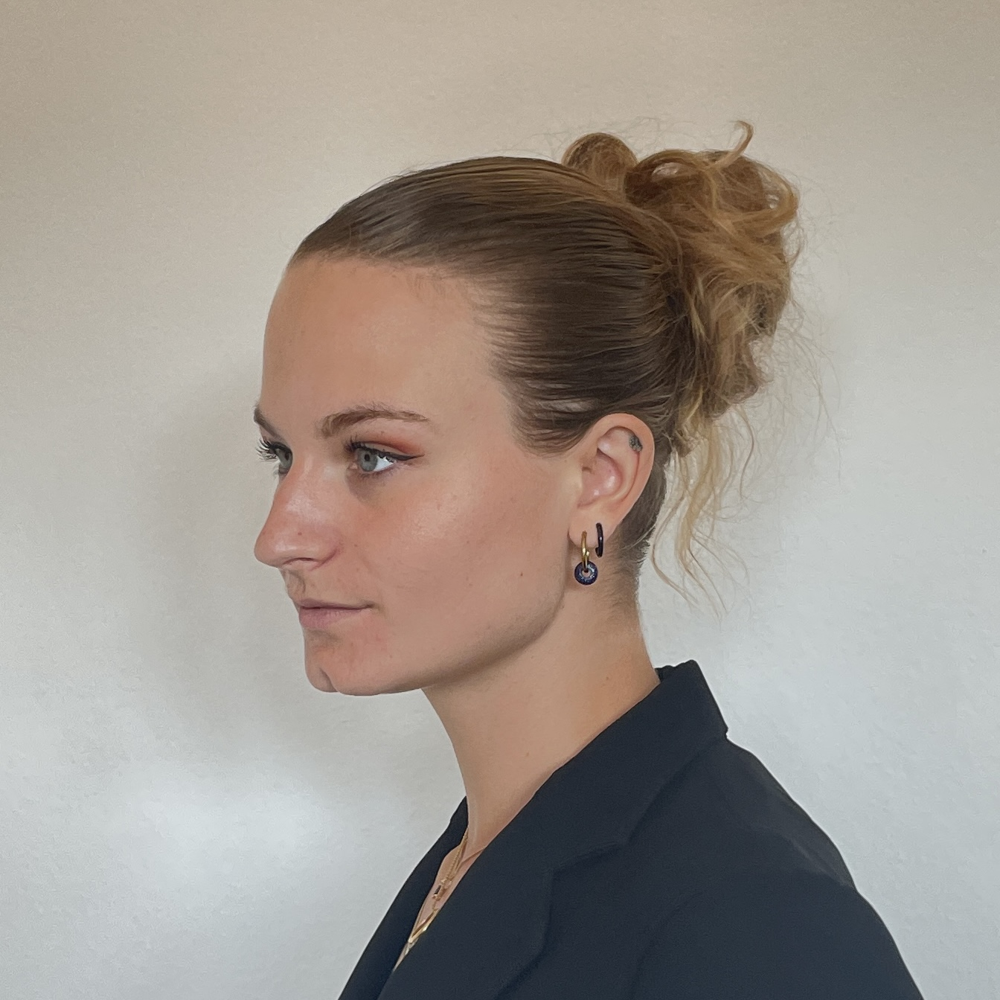

Hello, I'm Solene 🙈
Music is my lifeblood, especially opera and industrial techno. The grandeur of opera and the futuristic vibes of industrial techno speak to my soul like nothing else. And then there are sports cars – the epitome of speed and style, igniting my passion with every sleek curve. Whether I'm lost in the music or revving the engine of a powerful sports car, that's when I feel truly alive, completely immersed in my passions.
My first joy 🌞
Immersing myself in the realm of music, my passion delves deeper into the subterranean world of industrial techno.
- Immersive Journey: Dive into my world of industrial techno, where each beat takes me on an immersive sonic journey.
- Urban Exploration: Explore the gritty textures and pulsating beats that resonate with my fascination for urban landscapes.
- Post-Industrial Vibes: Experience the raw, unapologetic soundscapes that reflect my intrigue with post-industrial environments.
- Sonic Labyrinth: Navigate through a labyrinth of sounds, where every rhythm and synth sound speaks to my soul.
- Warehouse Hideaways: Lose myself in dimly lit warehouses, where the energy of underground techno pulses through the air.
- Underground Scene: Immerse myself in the vibrant atmosphere of underground clubs, where industrial techno sets the pace.
- Cultural Connection: Find solace and connection within a community that shares my passion for exploring the boundaries of sound.
- Personal Expression: Express myself through the music and culture of industrial techno, finding freedom and creativity in its embrace.
Get into the music industry 🥂
Opera singer since 2007, learning how to use vocal techniques, emotions, and acting were part of my life for quite some time.